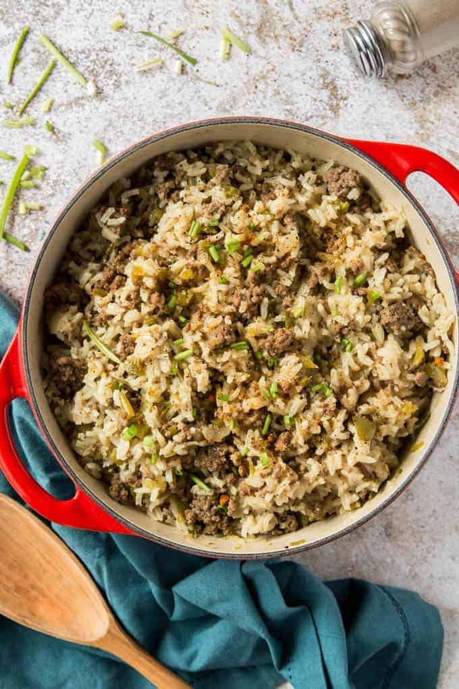

Dirty Rice

Description
Dirty rice is a classic Creole recipe. It's made with with white rice and cajun flavors.
The "dirty" name comes from the dirty color it gets from being cooked with ground beef, green bell pepper, celery, onions and seasonings.
These ingredients also add a lot of flavor.
Ingredients
- Ground Beef
- Onion
- Bell Pepper
- Celery
- Garlic
- Cajun Seasoning
- Kosher Salt
- White Rice
- Beef Broth
- Green Onion
Steps
- Add ground beef to a dutch oven or heavy bottomed pan set over medium heat. Crumble with a spatula and cook 4-5 minutes until no pink remains.
- Add onion, garlic, green pepper, celery, Cajun seasoning, and salt. Stir until softened, about 5 minutes.
- Add rice and beef broth. Bring to a boil, reduce heat and simmer covered about 20 to 23 minutes or until rice is cooked.
- Allow to sit for 5 to 10 minutes, then fluff with a fork. Garnish with green onions or parsley before serving.
- Enjoy!